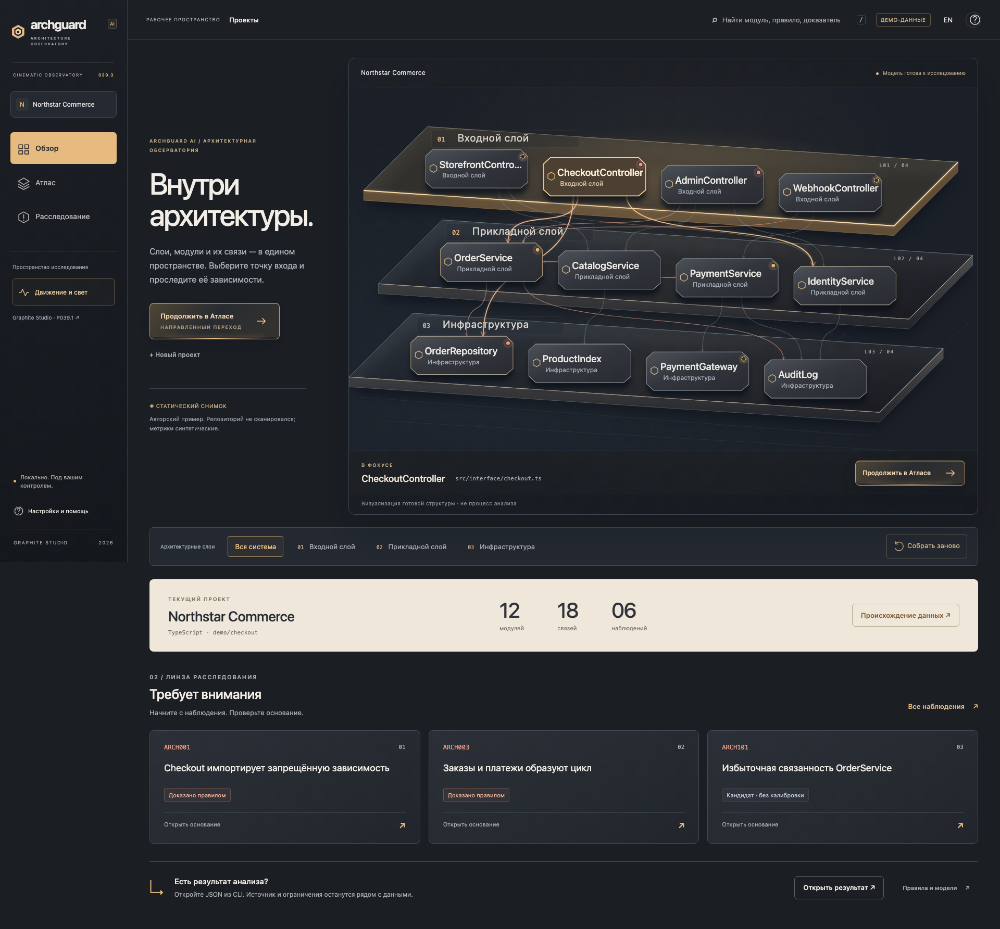
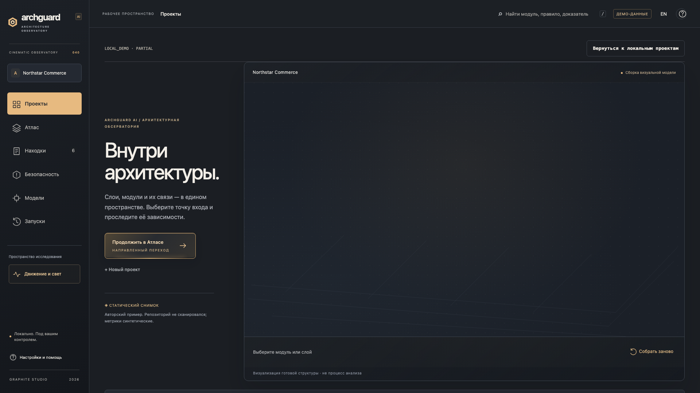
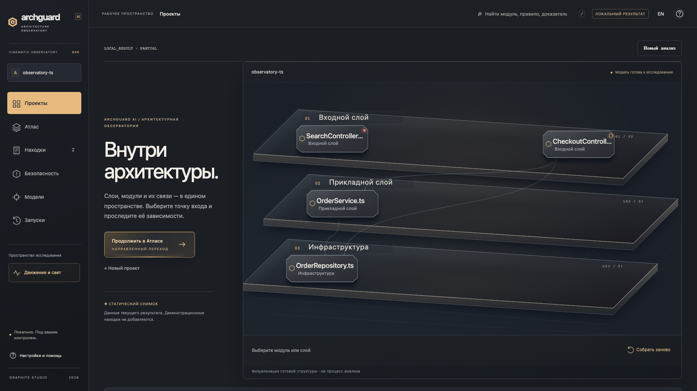

P039.3 — исходный дизайн. P040 — перенесённый renderer с реальным gateway, шестью разделами и фактическими слоями. Изображение «до» показывает прежний дизайн; все остальные screenshots и видео сняты с приложения P040.


